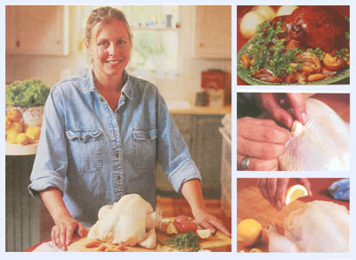
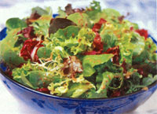

MOTHER'S KITCHEN
Making Thanksgiving simple again.
My brother John, ski instructor to Aspen vacationers, has a term for the town's upscale restaurant food. He calls it "foo-foo food." Although he appreciates fine cuisine, he's just as happy with a burger and fries. When it comes to food, new and different can be interesting as long as we can always fall back on the old favorites. At least we know how to prepare those oldies but goodies. Or do we? In an era when the art of cooking has been put on the back burner, many of us are stuck at the how-to-boil-water stage. Careers, kids, and pets leave little time for culinary creativity. This is why we find such books as Gourmet Cooking for Dummies at the local bookstore. Although I'd prefer "inexperienced" as opposed to "dummies" when referring to non-cookers, folks need to know the basics. As Thanksgiving weekend rapidly approaches, panic attacks are occurring nationwide. The in-law invasion won't be a problem if we have a few easy recipes under our belts.
MAIN MEAL OR THANKSGIVING DINNER
( or how not to wrestle with a turkey):
• Roast Chicken(s)
• Greens Salad
• Whole-grain rolls or bread
• Almost-Instant Dessert
NEXT DAY LUNCH:
• Freezer Bean Soup,
• defrosted Yesterday's rolls or bread,
• heated Selection of cheeses and fruit
DINNER:
•Chicken Salad over greens
• Warmed pita bread
• Tea and a plate of packaged cookies
BREAKFAST:
•Orange wedges
• Freezer muffins, bagels with cream cheese spreads and jam
• Granola and vanilla yogurt
• Eggs (only if necessary)
olive oil
1 five-pound roasting chicken*
1 lemon, cut into six wedges
8 large cloves of garlic, peeled and sliced in half, lengthwise bag baby carrots (16-ounce size)
fresh thyme sprigs
3 medium onions, peeled and sliced from end to end into quarters
1 cup chicken broth (1/2 of a 16-ounce can)
2 teaspoons arrowroot flour or cornstarch
1 teaspoon Dijon mustard
1 1/2 to 2 pounds tiny "new" red potatoes
If your grocery doesn't carry tiny potatoes, cut up some red-skinned potatoes into one-inch chunks.
1. Preheat oven to 425°F. Get out a roasting pan or a large baking pan. Rub some olive oil on the bottom of the pan with a paper towel. Get the lemon, garlic, and onions ready. Wash the potatoes. Remove the neck, etc., from the inside (cavity) of the chicken - -and throw away. Wash the chicken inside and out with cold water. Lay on paper towels and pat dry. Arrange the carrots in a single layer on the bottom of the pan. Place the chicken on top of the carrots. Stuff the chicken with the lemon wedges, two garlic pieces, and a few sprigs of thyme. Rub some olive oil on the skin of the chicken with a paper towel. Arrange the potatoes and then the onions around the chicken. Cut four slits in the chicken and stick a piece of garlic into each slit. Distribute the rest of the garlic over the potatoes and onions. Sprinkle thyme sprigs over the chicken and potatoes.
2. Bake at 425°F for 30 minutes, then pour the chicken broth over the top of the chicken. Reduce heat to 350°F and roast for 50 to 60 minutes. (The chicken is done when a meat thermometer inserted into the thickest part of the thigh reads 170 to 175°F, or when you insert a knife, the juices are clear and not pink.) The chicken will continue to cook a bit more as it rests.
Important: after handling raw meat and meat juices, make sure to wash any surfaces, utensils, or dishes that came in contact with the meat. Wash your hands well with hot, soapy water before touching anything.
3. Set the roasting pan on the counter next to a large platter. Stick a large spoon inside the cavity and tilt the chicken so the lemons and juices spill out into the pan. Put the chicken on the platter and let it rest for about ten minutes while you make the gravy. Arrange the carrots,
potatoes, and onions around the chicken. Cover the platter with foil.
To make gravy, stir the arrowroot flour or cornstarch into 1/4 cup of cold water in a medium-sized mixing bowl. Put the roasting pan over a burner on medium-high heat and stir until it starts to bubble. Stir in the water mixture and mustard; keep stirring for a minute or so until the gravy thickens. (It won't be very thick gravy.) Place a large strainer over the empty arrowroot flour bowl. From the comer of the pan, slowly and carefully pour the gravy into the strainer. (Use oven mitts; the pan is hot.) When all the gravy has dripped into the bowl, throw out the stuff in the strainer.
4. To carve and serve, first cut the thighs away from the breast, keeping your fingers out -of the way. Next slice the breast into 1/4-inch slices and cut off the wings. Place some chicken on a plate with a few carrots, potatoes, and onions. Ladle some gravy over the entire plate and sprinkle with some fresh thyme leaves if you like.
*Ask the butcher at the meat section of the supermarket for a whole "roasting" chicken, not a "fryer/broiler." We bought a naturally raised chicken (no hormone implants or pesticides used) which tastes better and is better for you. Ask your butcher if he carries them. (Don't be fooled; a "free-range" chicken might not be fed organic feed and allowed to roam free. "Organic" is the key word here.)
It's so easy to make salad dressing that there's no need to buy expensive bottled dressings.
2 to 3 large cloves garlic, chopped
1/4 cup each: extra virgin olive oil, balsamic vinegar, fresh lemon juice
2 teaspoons Dijon mustard
1 teaspoon sugar
1/4 teaspoon salt or more to taste dash cayenne pepper freshly ground pepper
Put all the ingredients in a blender and blend until smooth. Pour into a glass jar and refrigerate until ready to use. Whisk or shake before using. Use just enough dressing to coat the lettuce. The vinaigrette will keep up to a week.
Pick out a mixture of greens: mesclun mix, red oak and red leaf lettuces, baby spinach leaves, arugula, etc. Allow about one cup or so per person. Rinse the greens in a colander the same day that you plan to use them. Wrap in a non-terrycloth towel, put into a plastic bag, and refrigerate until it's time to toss. Make sure the greens are dry, or the dressing won't stick to the lettuce.
No problem if you don't own a bowl big enough for tossing; use a clean plastic shopping or garbage bag, Gently toss the salad in the bag or toss the salad with your hands.
Other salad ingredients: keep it simple, such as thinly sliced red onion and seedless cucumbers cut into match sticks. In season, you might try sliced strawberries or orange slices.
Your mother-in-law will love this one. Make sure you pick the chicken off the bones for chicken salad the next day.
2 cups shredded or chopped roast chicken
1cup seedless red grapes, halved
2 large stalks celery, sliced on a diagonal
2 green onions, chopped
1/4 cup of your favorite lowfat ranch or creamy garlic dressing
2 tablespoons plain yogurt
2 tablespoons fresh dill leaves, chopped (optional)
salt and pepper to taste
In a mixing bowl, whisk together the dressing and yogurt. Add the rest of the ingredients and toss together. Serve over lettuce or as an open-faced sandwich on a slice of toasted whole-grain bread, English muffin, or roll. Or try toasted site bread with some chopped lettuce.
Anyone can make this simple and economical bean soup. It freezes well, so save some for the freezer. (Make sure you mark a date on it.)
3 cups uncooked navy beans
1 tablespoon olive oil
1 large onion
3 large cloves garlic, minced
3 medium carrots, thinly sliced*
2 stalks celery, thinly sliced*
1 teaspoon dried thyme
1 tablespoon white wine or cider vinegar
1 tablespoon brown sugar
1/3 cup tomato paste
1/2 teaspoon salt
1/4 teaspoon cayenne pepper
freshly ground pepper
Place the beans in a large soup pot and add 2 cups water until the beans are covered with an inch or so extra. Bring the beans to a boil, cover, and turn off the heat. Let sit for at least one hour but not longer than four hours. Drain the water and add 6 cups of water. Cover and simmer the beans for an hour or so until tender. Pour the beans and liquid into a large bowl.
Heat the oil in the soup pot on medium heat and saute the onions until soft, then add the garlic. Saute for a minute or so, and then put the beans and liquid back into the pot. Add the rest of the ingredients, cover, and reduce to a simmer. Simmer the soup for about 30 minutes until the vegetables are tender, stirring occasionally and adding more water as needed.
*Slice the carrots and celery slightly on the diagonal for a change if you wish.
Ask your butcher if he carries naturally-raised chicken (no hormone implants, No Pesticides in food). Don't be fooled: I "free-range chicken might not he led organic food.
raspberry sauce (see below)
2 one-inch slices bakery pound cake (freeze the rest)
1 pint or more of vanilla frozen yogurt or lowfat ice cream
Prepare the raspberry sauce at least an hour before serving and refrigerate. Cut the pound cake into one-inch cubes and store in a plastic bag until serving. Assemble the dessert by placing a layer of pound cake in a dessert bowl, then adding a scoop of ice cream topped with the raspberry sauce.
1 package frozen unsweetened raspberries, mostly defrosted (I use a 12-ounce bag)
2 to 3 tablespoons sugar
1/4 teaspoon almond extract (optional)
Put all the ingredients in a blender and blend until smooth. Strain into a pitcher and serve. Store in a plastic container for up to three days.
|
 |
 |
|